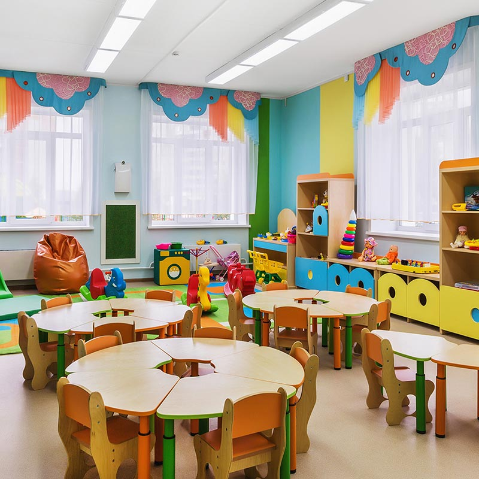

Asilo
Un'esperienza educativa incentrata sulla crescita, l'apprendimento precoce e lo sviluppo delle competenze relazionali dei bambini.

Sede
Scuola dell'infanzia "filippo Covi"- Alzano Sopra
Periodo
Maggio 2025
TUTOR
Maestra Giusy Gherardi
Diario di Bordo
Ho trascorso due settimane affiancando le maestre della scuola dell’infanzia, con l’obiettivo di osservare e comprendere le dinamiche relazionali e didattiche in questa fascia d’età. Fin dal primo giorno ho cercato di integrarmi nelle attività quotidiane, aiutando i bambini nei momenti del gioco, dei laboratori creativi e del pranzo.
Competenze
Riflessioni Finali
Questa esperienza è stata stimolante ed educativa: mi ha permesso di mettermi in gioco in un contesto totalmente nuovo. All’inizio non è stato semplice trovare la giusta chiave di lettura per comunicare con i bambini ed entrare nel loro mondo, ma giorno dopo giorno, ho imparato a comprendere le loro esigenze e il loro linguaggio. I bambini hanno un modo tutto loro di vivere le giornate, spesso mi è sembrato non si stancassero mai, che svolgessero, anche per un’intera giornata, le stesse attività o gli stessi giochi, senza annoiarsi. Ho imparato a giocare con loro o banalmente a guardarli giocare, consapevole che era ciò che volevano. Ho collaborato con le maestre e ho compreso molto di più sul loro ruolo nell’ambiente scolastico.